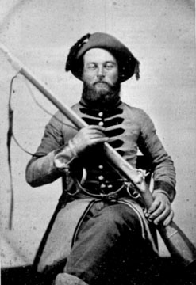

|

NAME: James Madison Conaway
BORN: 1833
DIED: 1899
ALLEGIANCE: Confederate
HIGHEST RANK: Private
UNIT: 61st Alabama Infantry, Company I
RECORD: Enlisted in a battalion organized at Pollard, Alabama, in
May 1863. Hospitalized with an illness in Richmond and
Lynchburg, Virginia, in June and August 1864. Captured at
Petersburg, Virginia, on April 2, 1865. Imprisoned at Point
Lookout, Maryland, until June 10.
|
|
James Madison Conaway was one of seven brothers to fight for
the Confederacy. By the war's end, one had died of disease
and another had returned home disabled. James himself was
hospitalized, but he recovered and returned to combat.
James was a 30-year-old father of three when he enlisted
with his brother Thomas in a Confederate battalion in May
1863 (though pension records indicate he had measles at Camp
Watt, Alabama, the previous September, suggesting an earlier
enlistment). The battalion eventually joined the garrison of
Mobile.
Conaway went to war in colorful attire that his
ambrotype, shown here, can only suggest. He wears a
brass-buttoned gray frock coat trimmed in blue and black, a
befeathered hat, and leather gauntlets. His weapons are a
Model 1841 Mississippi Rifle or a Confederate copy (perhaps
a photographer's prop), and a menacing D-guard Bowie knife.
A Masonic apron lies folded on his lap.
In April 1864 Conaway's battalion was enlarged to become
the 61st Alabama Infantry and was later joined with four
other Alabama regiments to form Battle's Brigade of the Army
of Northern Virginia. Conaway fought in numerous Virginia
battles until illness landed him in the hospital twice in
1864. He soon rejoined his unit and was captured near Fort
Mahone, south of Petersburg, during a Union assault on April
2,1865. His regiment was surrendered at Appomattox Court
House a week later.
Conaway was sent to Point Lookout Prison in Maryland.
There, he received a letter from his cousin, Curtis A.
Conaway, of Delaware. Although Curtis was a slaveowner, he
was a loyal Unionist, and he scolded James for siding with
the Confederacy. "Why count you take the oath of a legents
[allegiance] to the goverment and git out?" Curtis asked.
"It is rite you should do it. The South had no bisoness of
soseding at furst. It is the worst thing she ever don for
her self. The common class is to be pitted [pitied] but the
ledors aut to be hung as hy as havon."
Conaway took the Oath of Allegiance to the United States
on June 10 and was released from prison. He returned home
where he resumed farming, fathered seven more children, and
was elected justice of the peace. He died in 1899.
Source: Civil War Times Illustrated
35:7 (February 1997), 80.
|